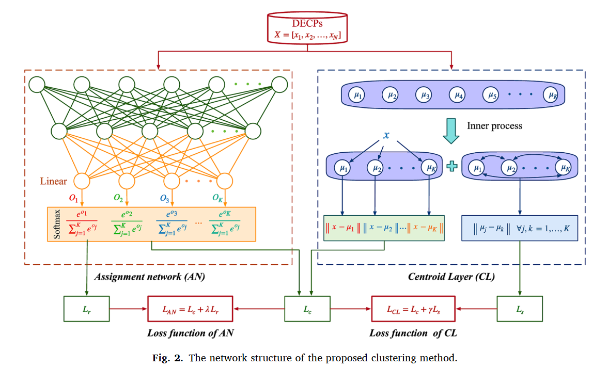
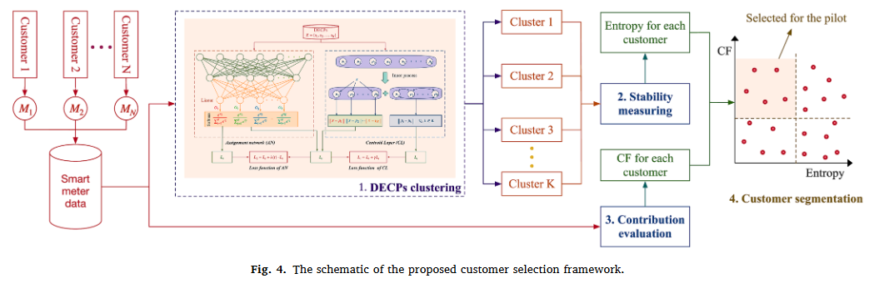

A New Deep Clustering Method for Demand Response Program
📝 论文摘要
Demand response (DR) is regarded as a promising solution to the problem of renewable energy integration, while it remains one of the key barriers for DR to target the right customers, i.e. the customers with high potential in peak reduction. Exploring the electricity consumption behaviors of customers can help DR program practitioners evaluate customers’ peak reduction potential. Clustering has been the most common approach to describe customers’ consumption behaviors in the literature. However, the existing clustering methods suffer from either unscalability or poor performance when handling a large number of daily load curves. To overcome these issues, a new deep learning-based clustering method is proposed in this paper, which integrates both intra-cluster compactness and inter-cluster separation into the objective function of clustering for consideration. Based on the clustering results, a new customer selection framework is developed to identify the potential good candidates for DR programs, which takes the stability of consumption behaviors and the characteristics at peak hours into account. Case studies on a London dataset demonstrate the superiority of the proposed clustering method over classical K-means and two state-of-the-art deep clustering methods in terms of clustering validity indexes. Furthermore, the simulations performed on an actual price-based pilot show that the customers selected by the proposed customer selection framework contribute to 59 % of total peak reduction with only accounting for 23 % of population.
🏷️ 关键词
Demand response
Smart meter
Customer selection
Deep clustering
Intra-cluster compactness
Inter-cluster separation
🎨 技术路线

The network structure of the proposed clustering method.

The schematic of the proposed customer selection framework.
📊 论文信息
期刊/会议名称
International Journal of Electrical Power & Energy Systems
影响因子
5.2
DOI
https://doi.org/10.1016/j.ijepes.2023.109072
📥 资源下载
📋 BibTeX 引用
@article{XIAO2023109072,
title = {A new deep clustering method with application to customer selection for demand response program},
journal = {International Journal of Electrical Power & Energy Systems},
volume = {150},
pages = {109072},
year = {2023},
issn = {0142-0615},
doi = {https://doi.org/10.1016/j.ijepes.2023.109072},
url = {https://www.sciencedirect.com/science/article/pii/S0142061523001291},
author = {Jiang-Wen Xiao and Yutao Xie and Hongliang Fang and Yan-Wu Wang},
keywords = {Demand response, Smart meter, Customer selection, Deep clustering, Intra-cluster compactness, Inter-cluster separation},
}